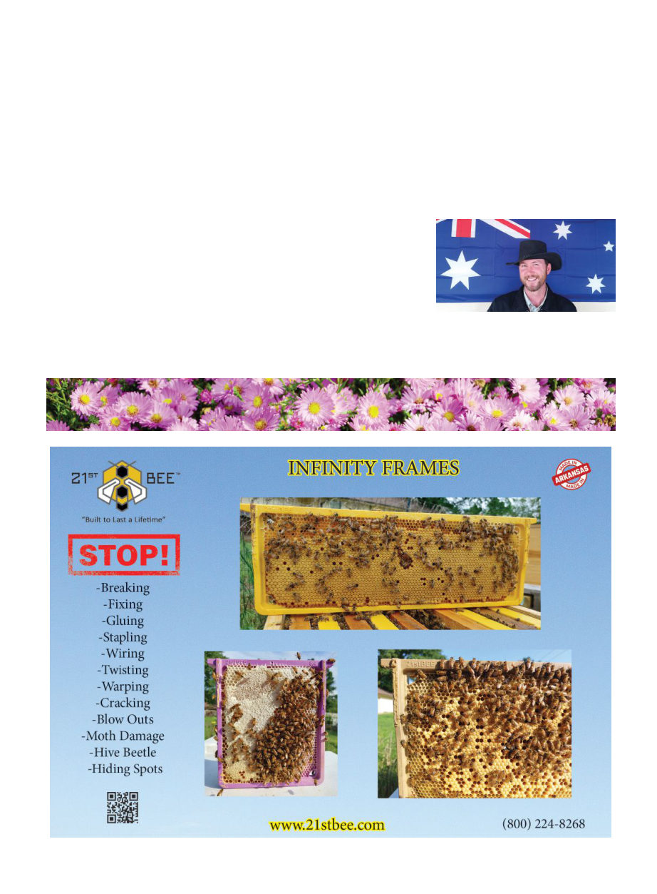

October 2025
1127
when they want, in over a quarter
century of beekeeping now I have
never previously heard of this phe-
nomenon myself, so now I’m really
curious: Readers, have any of you
seen a cyclops bee?
This article first appeared in the June
2025 issue of The Australasian Beekeeper.
References
1. Epperson, K. J., et al., (2025). A morpho-
logical description of “Cyclops” honey
bee (Apis mellifera L.). Journal of Apicul-
tural Research, 1–3. https://doi.org/10.10
80/00218839.2025.2484065
2. Rothenbuhler, W. C., et al., (1968). Bee
genetics. Annual Review of Genetics,
2(1), 413–438. https://doi.org/10.1146/an
nurev.ge.02.120168.002213
3. Alfonsus, E. C. (1931). A one-eyed bee
(Apis mellifica) (sic). Annals of the Ento-
mological Society of America, 24(2), 405–
408. https://doi.org/10.1093/aesa/24.2.405
4. Miller, F. E. (1936). A histological study
of the eye and brain of a one-eyed bee.
Annals of the Entomological Society
of America, 29(1), 66–69. https://doi.
org/10.1093/aesa/29.1.66
Kris Fricke is the editor of the Australasian
Beekeeper, Australia’s national beekeeping
magazine. He is originally from Southern
California.
5. Hopwood, J. L. (2007). A “Cyclops” of
the bee Lasioglossum (Dialictus) bruneri
(Hymenoptera: Halictidae). Journal of
the Kansas Entomological Society, 80(3),
259–261. https://doi.org/10.2317/0022-
8567(2007)80[259:ACOTBL]2.0.CO;2
6. Engel, M. S., et al., (2014). A pentocellar
female of Caenaugochlora inermis from
southern Mexico (Hymenoptera: Halicti-
dae). Journal of the Kansas Entomologi-
cal Society, 87(4), 392–394. https://doi.
org/10.2317/JKES130907.1
7. Tucker, K. (1978). Honey Bee pests,
predators, and diseases (Morse, R., ed.,
pp. 258–274). Comstock Pub.
8. Laidlaw, H. H., Tucker, K. W., (1965)
“Three Mutant Eye Shapes In Honey
Bees,” Journal of Heredity, 56(4), pp 190-
192, https://doi.org/10.1093/oxfordjourn
als.jhered.a107412
9. Citations internal to Laidlaw 1965, I'll put
just in abbreviated form here, in order
they occur, as Lotmar 1936, and Kerr 1956.
10. Haydak, M. H., (1948) “Notes on Biology
of Cyclopic Bees,” Journal of Economic
Entomology, 41(4), pp663–664, https://
doi.org/10.1093/jee/41.4.663
11. Eckert, J.E. (1937). Honeybee Mon-
strosities. Annals of the Entomological
Society of America, Volume 30, Issue 1,
1 March 1937, Pages 64–69, https://doi.
org/10.1093/aesa/30.1.64
12. Lucas, M. H. (1868). “Quelques mots
sur un cas de cyclopie observe chez un
insecte Hymenoptere de la tribu des Api-
ens (Apis mellifica).” Ann. Soc. Entom.
France 37: 787-40. https://www.biodiver
sitylibrary.org/page/8557333#page/215/
mode/1up
13. Woyke, J. (1976). Population Genetic
Studies on Sex Alleles in the Honeybee
Using the Example of the Kangaroo Is-
land Bee Sanctuary. Journal of Apicul-
tural Research, 15(3–4), 105–123. https://
doi.org/10.1080/00218839.1976.11099844